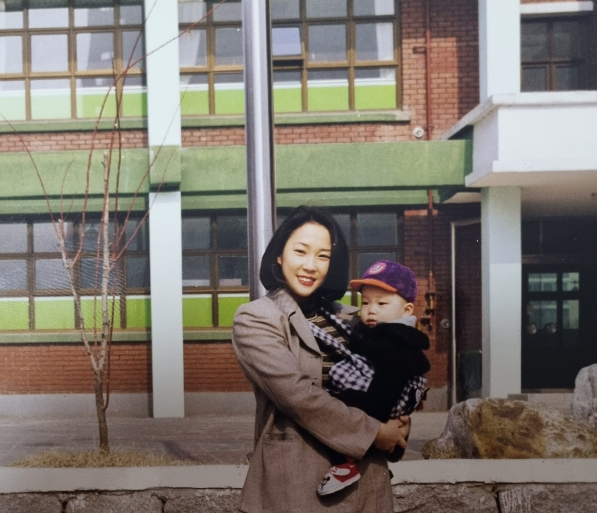
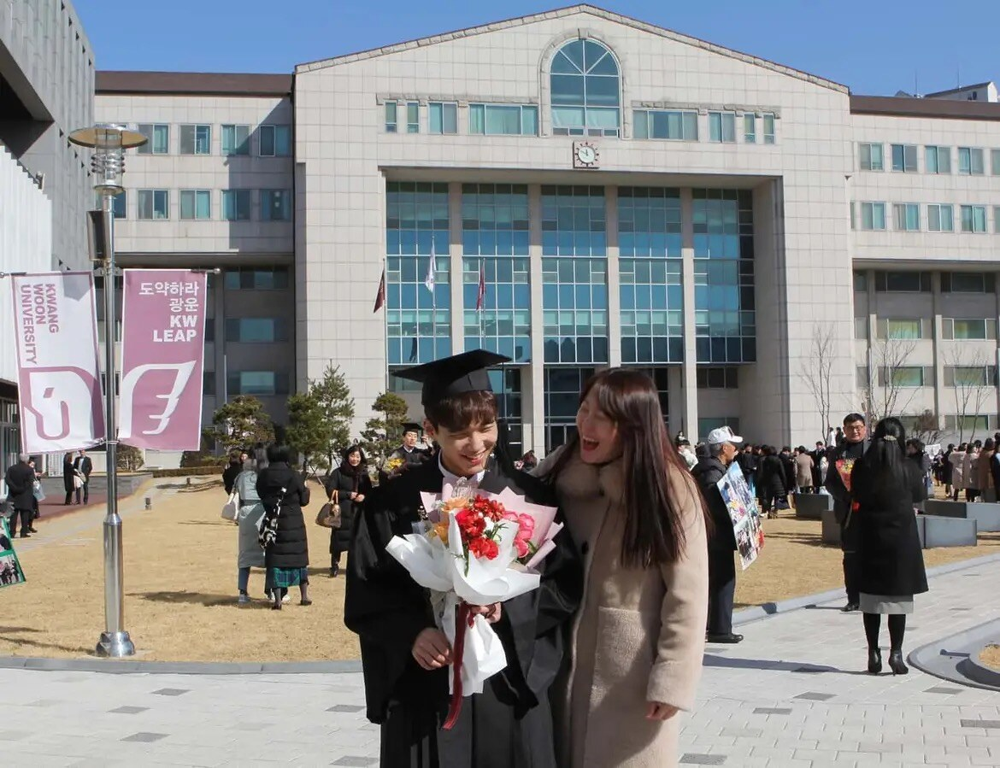
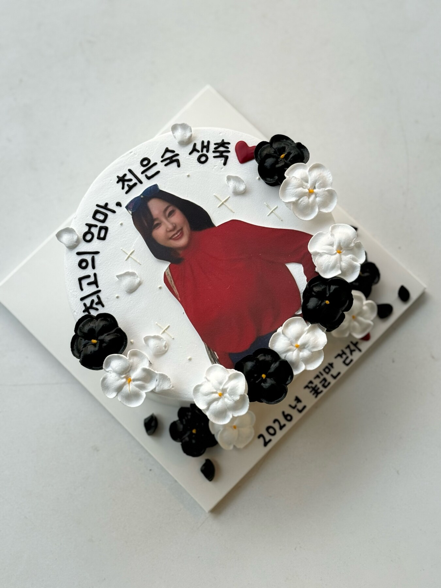
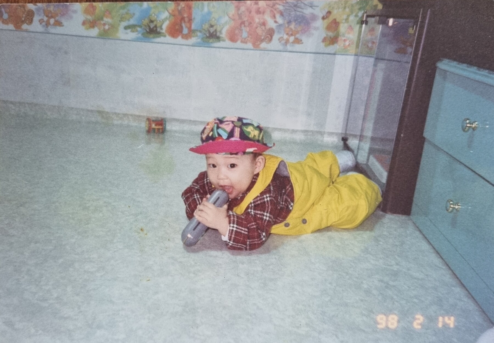
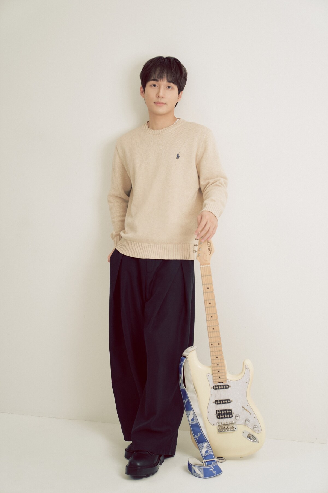
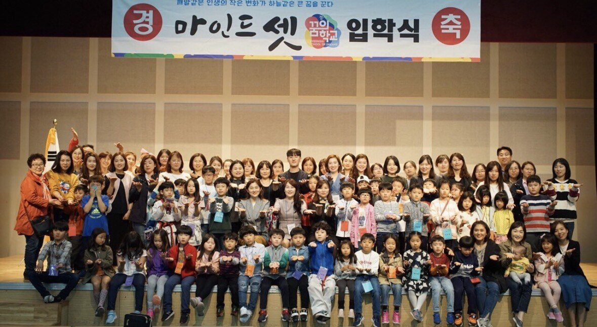
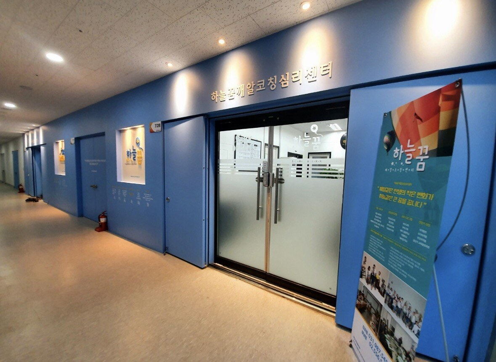
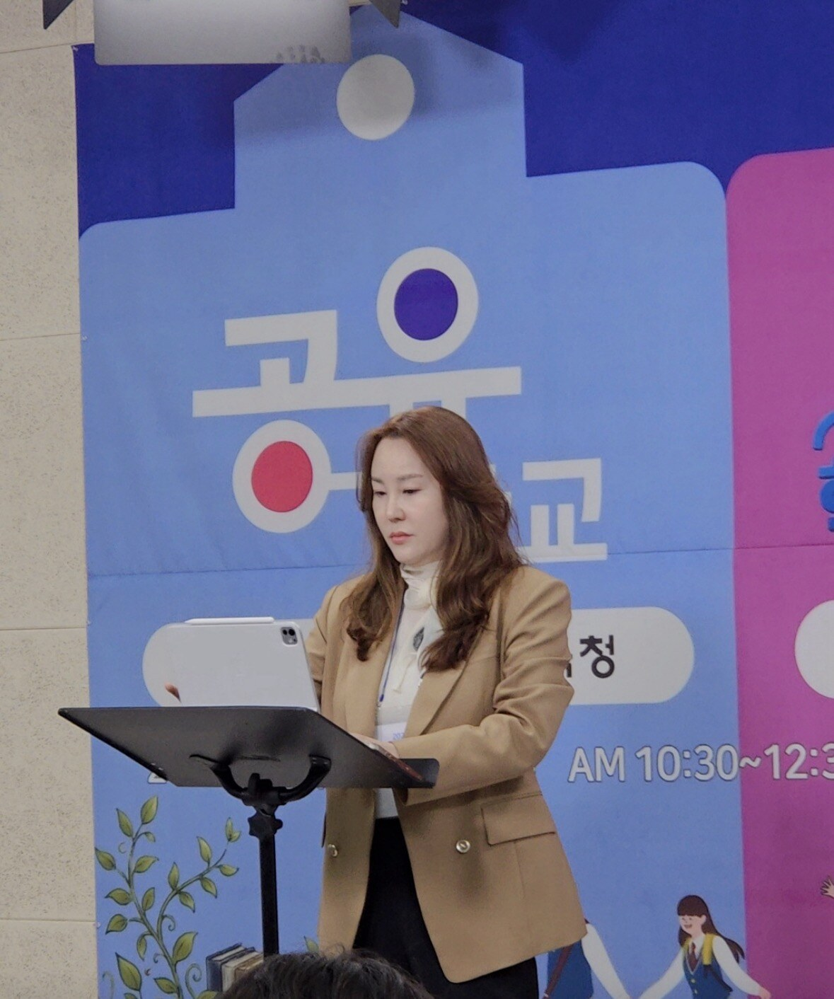

Personal

My mother is a pastor who runs her own psychology counseling center and is also a certified counselor. She leads a center with eight counselors and is about to open a second center.
But only a decade ago or so, she interviewed for a job to wash dead bodies (corpses). This interview wasn’t just about talking about herself. Instead, soon after the short dialogue was over, she was taken to a cold underground morgue to wash a corpse in person.
Although she didn’t get the job, my mother, who is petrified at the sight of cockroaches and even the tiniest insects, conjured up the courage to do so because she was desperate. She was a single mom who desperately needed a job that paid $25 more per day than working at a café.
As such, her life to this day wasn’t easy. Until she built a career for herself after graduating, she had no college diploma when she had to raise me singlehandedly. Thus, the list of all the odd 3D (Dirty, Dangerous and Demeaning) jobs doesn’t fit on one page, including selling honey door-to-door.
She took on all these difficult jobs for ME - her precious only child. But more than anything, she worked so hard because she wanted me to have the opportunities she never had. Dance, for instance, was her dream, and I have absolutely no doubt in my mind that she would have made a fine career dancer if given a chance – but she didn’t get that chance. With a sick bedridden father, blind and paralyzed from the waist down for life, and a mother who brought home bare minimum wage as a caretaker, my mother was accepted into a good university but couldn’t attend.
But quitter, she is not. Later, once I was old enough to take care of myself, she applied and made it to a university, graduating at 37 and later earning a PhD in Psychology (Counseling) at 45. She even went as far as earning yet another PhD in Philosophy only five years ago, two years short of turning 50.
Yes, my mother is a superwoman. But also, an amazing mom. My role model.


And my teacher as well. She showed me that you don’t need to give up a dream but just push it back a bit as she did; she double majored in dance. Even today after a hard day’s work, she dances at the dance studio at our center. Just like her, I never gave up on a love of mine – music. Although I always knew I wouldn’t make it big, still I formed my own band with four members, and we are jamming together at different venues (I am the first guitarist and vocalist).


Also, she shares. She has counseled more than tens of thousands, working very closely with governments and schools to make counseling affordable and more accessible.



Now it is my turn, and with a mother like her who sets the bar high, I cannot settle for less. I work mostly with struggling teenagers from disadvantaged families, labeled as underperformers in schools – because I was one of them.
In fact, my mother told me that she went into psychology because of me because she wanted to understand me: I do admit that I was a difficult child and later a rebellious teenager. Now that I think about it, the loss of a father must have been hard while other curve balls in life—like having to live with my grandparents for years while my mother struggled to make a living and seeing my high school, a well-intentioned charter school that I enjoyed very much, shut its doors—left me puzzled.
Thus, I wasn’t exactly an A student. By no means did I lose interest - I was simply lost for years.
But I had a good support system; besides my mom, I was blessed because I had good teachers. Teachers who even went out of their way to help me with my tuition back in the charter school.
Thanks to them, I managed to graduate early and made it to a good school, and found my motivation, my path.